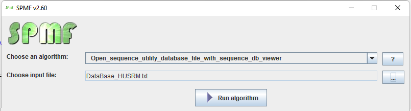
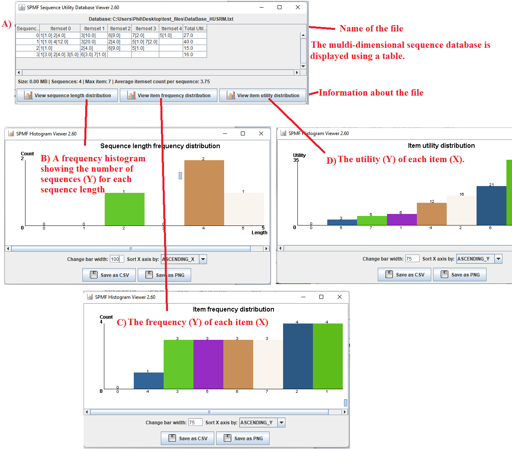

View a sequence utility database file with the Sequence Utility Database Viewer (SPMF documentation)
Sequence databases with utility information are a type of data taken as input by several data mining algorithms offered in SPMF such as HUSRM and USPAN.
SPMF offers a tool to view the content of a sequence database with utility information. This tool is called the SPMF SequenceUtility Database Viewer.
This page explains how to use this tool with an example.
How to run this example?
If you want to run this example from the graphical interface of SPMF, (1) choose the algorithm "Open_sequence_utility_database_file_with_sequence_db_viewer", (2) choose the DataBase_HUSRM.txt file as input, and then (3) click "run algorithm" .

- If you want to run this example from the source code of SPMF, run the file MainTestSequenceUtilityDatabaseViewer, which is located in the package ca.pfv.spmf.tests
- If you want to execute this example from the command line interface of SPMF, then execute this command:
java -jar spmf.jar run Open_sequence_utility_database_file_with_sequence_db_viewer DataBase_HUSRM.txt
in a folder containing spmf.jar and the file DataBase_HUSRM.txt which is included with SPMF.
What is displayed?
After running the example, the content of the file will be displayed by the tool. The picture below shows the user interface of this viewer.
The window A) show in the picture below is the main window. It displays the utility sequence database using a table. The table has four rows in this example. Each row is a sequence from the sequence database.
Assume that this database contains the sequence of purchases made by different customers.
Take the first row as example.
The first cell of that row indicate that the ID of the first sequence is 0.
The second cell of that sequence means that the customer 0 represented by this sequence bought items 1 and 2, and those items respectively generated
a profit of 1$ and 4$.
The third cell indicates that the customer 0 then bought item 3 for 10$.
The fourth cell indicates that the customer 0 then bought item 6 for 9 $.
The fifth cell indicates that the customer 0 then bought item 7
for 2$.
The sixth cell indicates
that the customer 0 then bought item 5 for 1 $.
The last cell of the first row gives the total utility (profit) generated by that
sequence of transactions made by customer 0, which is 1$ + 4$ + 10$ + 9$ + 2$ + 1$ = 27 $.
The other sequences follow the same format.
This view as a table can be useful to understand the content of a utility sequence database file.
Besides, there are three buttons that provides additional features:
- By clicking on the button "View sequence length distribution ", a new window is opened, presented as window B) in the picture below. This window displays the frequency histogram of the different sequence lengths in the current file. The number of sequences is the Y axis and the different sequence lengths are the X axis. There are some buttons in this window to export the data from the frequency histogram as a CSV file so that it can be imported in other software (e.g. Excel), or as a picture. Besides some options are provided to adjust the bar width and the order in which the X axis is sorted.
- By clicking on the button "View item frequency distribution ", a new window is opened, presented as window C) in the picture below. This window displays the frequency of the different items in the current file. The different items are displayed on the X axis and their frequency (support or number of occurrences) are presented on the Y axis. There are some buttons in this window to export the data from the frequency histogram as a CSV file so that it can be imported in other software (e.g. Excel), or as a picture. Besides some options are provided to adjust the bar width and the order in which the X axis is sorted.
- By clicking on the button "View item utility distribution ", a new window is opened, presented as window D) in the picture below. This window displays the utility values of the different items in the current file. The different items are presented on the X axis and their utility values are displayed on the Y axis. There are some buttons in this window to export the data from the frequency histogram as a CSV file so that it can be imported in other software (e.g. Excel), or as a picture. Besides some options are provided to adjust the bar width and the order in which the X axis is sorted.

What is the input?
The algorithm takes as input a sequence database with utility information, as used by algorithms such as HUSRM and USPAN..
The database used in this example is provided in the text file "DataBase_HUSRM.txt" in the package ca.pfv.spmf.tests of the SPMF distribution, which follows the file format for HUSRM and USPAN.
In that format, a sequence database contains multiple sequences, and each item appearing in sequences have a utility value.
More precisely, the input file format of HUSRM is defined as follows. It is a text file.
- Each line represents a sequence of transactions.
- Each transaction is separated by the keyword -1.
- A transaction is a list of items (positive integers) separated by single spaces and where each item is annotated with a generated sale profit indicated between square brackets [ ]. The sale profit is a positive integer.
- In a transaction, it is assumed that items are sorted according to some order (eg. alphabetical order).
- Each sequence ends by the keyword "-2". Then, it is followed by the keyword "SUtility:" followed by the sum of the utility (profit) of all items in that sequence.
For example, the file DataBase_HUSRM.txt contains the following content:
1[1] 2[4] -1 3[10] -1 6[9] -1 7[2] -1 5[1] -1 -2 SUtility:27
1[1] 4[12] -1 3[20] -1 2[4] -1 5[1] 7[2] -1 -2 SUtility:40
1[1] -1 2[4] -1 6[9] -1 5[1] -1 -2 SUtility:15
1[3] 2[4] 3[5] -1 6[3] 7[1] -1 -2 SUtility:16
For example, consider the first line. It means that the first customer nbought items 1 and 2, and those items respectively generated a profit of 1$ and 4$. Then, the customer bought item 3 for 10$. Then, the customer bought item 6 for 9 $. Then, the customer bought items 7 for 2$. Then the customer bought item 5 for 1 $. Thus, this customer has made 5 transaction. The total utility (profit) generated by that sequence of transaction is 1$ + 4$ + 10$ + 9$ + 2$ + 1$ = 27 $.